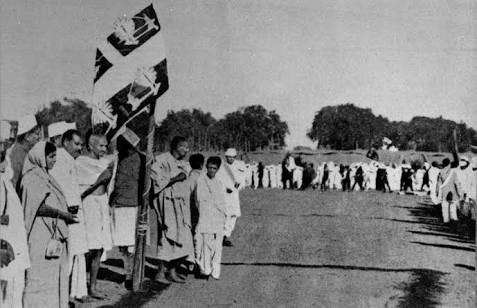
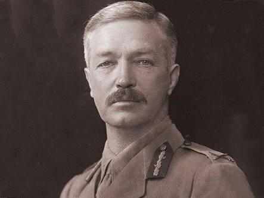
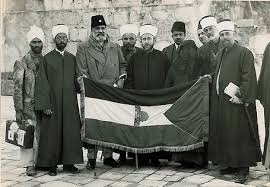
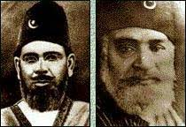
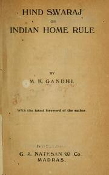

The First World War
- New economic and political situation.
- Increase in defence expenditure.
- Customs duties raised.
- Income tax introduced.
- Forced recruitment in rural areas.
- Crops failure led to shortages of food.
- Accompanied by an influenza epidemic.
The Idea of Satyagraha
- Satyagraha-A new mode of mass agitation against british rule.
- Emphasised the power of truth and the need to search for truth.
- Physical force was not necessary to fight the oppressor.
- Satyagrahi could win the battle through nonvoilence.
Satyagraha Movement
- Year: 1916
Champaran in Bihar
Reason- inspire the peasants to struggle against the
oppressive plantation system.
- Year: 1917
Kheda district of Gujarat.
Organised a satyagraha for the peasants.
They demanded revenue cul lection to be
relaxed.

×

- Year: 1918, Mahatma Gandhi
Ahmedabad
Reason:Organise a satyagraha movement
amongst cotton mill workers.
The Rowlatt Act
- Gandhiji in 1919 decided to launch satyagraha
- Passed by Imperial Legislative
Council
- Gave Government Right to :
Repress Pul itical Activities
Detension of pul itical activities for 2 years
- Rallies and strikes organised
- 10 April, the police in Amritsar fired

×

- General Dyer took command.
- Date: 13 April
- To ‘produce a moral effect'.
Khilafat Movement
- Mahatma Gandhi wanted the Hindus and Muslims together.
- Ottoman Turkey was defeated in The First World War .
- Harsh peace treaty was imposed on the them.
- 
×

- A Khilafat Committee
formed in Bombay in March 1919.
- 
×

- Muhammad Ali and Shaukat Ali came up.
- Calcutta session of the Congress in September 1920,
- It convinced
leaders of the need to start a non-cooperation movement
Non-Cooperation
- 
×

- In Hind Swaraj (1909) Mahatma Gandhi declared :
if Indians
refused to cooperate, British rule in India would collapse.
Steps Taken
- Surrender of titles that the government
- Boycott of civil services
- Civil disobedience campaign launched.
- Through the summer of 1920 Mahatma Gandhi and Shaukat Ali began
mobilising support.
- Congress session at Nagpur in December 1920
- There the Non-Cooperation programme was adopted
BAck To Top
Significance of Non-Cooperation Movement
- Mass Movement
- Participation of Women
- Common Aim - Not to Co-operate
- Peaceful Way
- Unity among different section of the society